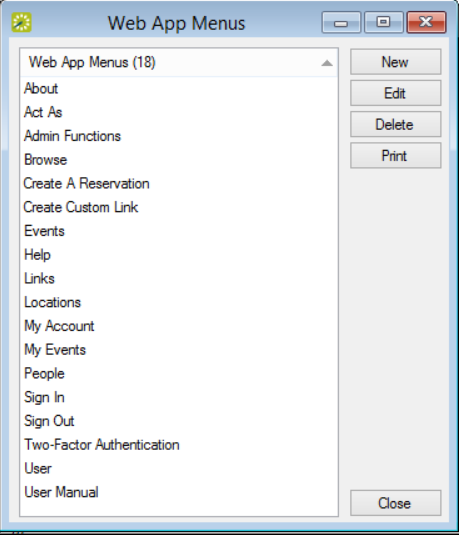
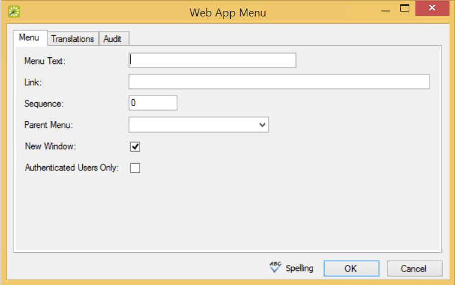

Note: If you have {{product_webapp}} open, you might have to log out and then log back in to see the new menu item.
When {{product_webapp}} is first installed, the main menu has a layout that determines the following:
You can add customized menu items to the existing list of system menus. These custom items can be links to {{product_webapp}} pages or to websites outside {{product_webapp}}.


|
Field |
Description |
|---|---|
|
Menu Text |
The text for the item as it is to appear on the {{product_webapp}} menu. |
|
Sequence |
A number that indicates the order in which this menu option is to appear relative to other menu items that fall under the same parent menu. Items are ordered from lowest to highest sequence number, with the item with the lowest sequence number appearing first. Note: If you leave the sequence set to the default value of zero for all menu items, then by default, the items are displayed alphabetically. |
|
Link |
The URL or web address for the menu (for example, www.myorganization.com). |
|
Parent Menu |
The primary menu under which this new menu item is found. |
|
New Window |
Select this option if this new menu item should open in a new browser window or tab (with {{product_webapp}} remaining open behind the new window or tab. |
|
Authenticated Users Only |
Select this option if access to this new menu item is restricted to only those users who have logged in to {{product_webapp}}. |
|
|
Note: If you have {{product_webapp}} open, you might have to log out and then log back in to see the new menu item. |